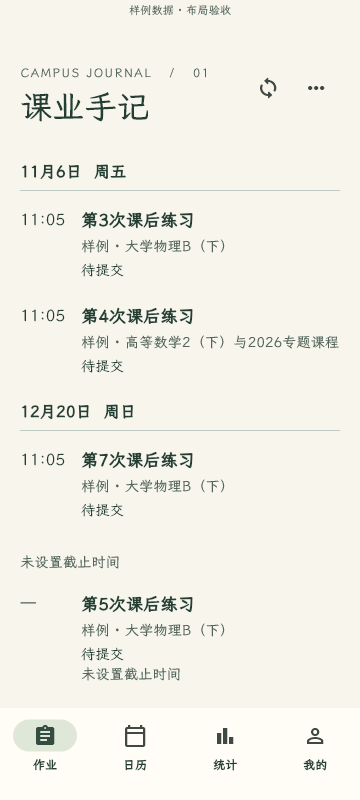
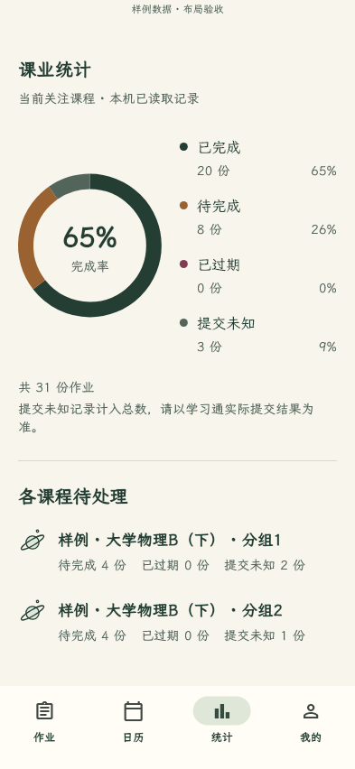
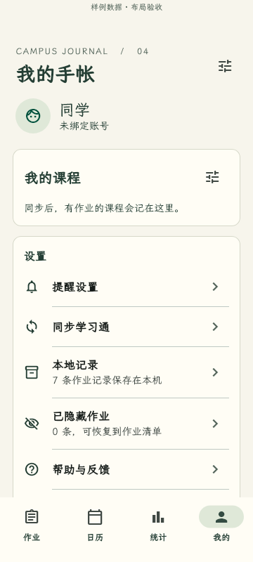

课业时间轴
作业、课程任务与考试统一混排，按截止或开考时间阅读。未完成留在首页，逾期事项明确置底。
一本属于今天的课业手记
作业、课程任务与考试，收进同一条时间轴。
配合本机提醒、每日计划与个人记录，
让接下来要做什么，一目了然。
已核验下载版本 · 1.8.15
ARM64 / x86_64 · MIT 开源 · 无需 GitHub 账号即可下载

作业、课程任务、考试，按真实时间放在一起。
计划、备注、完成统计，留下自己的学习轨迹。
登录直接连接学习通，不经过项目维护者中转。
课程群里的任务、学习通里的作业、日历上的考试，常常不在同一个地方。真正让人疲惫的，有时不是课业本身，而是反复确认：还有什么没做？什么时候截止？
课业手记把散落在不同入口的信息整理成可以阅读、筛选和安排的日常。首页只留下当前未完成的事，过去完成的课业则在本地记录里好好收着。
它不催促你，也不替你做决定。
只是把重要的事，写得更清楚一些。
基于学习通读取的课业记录可能受接口与登录状态影响。它是核对与整理的助手，不替代学习通的原始信息。
A QUIET TOOLKIT / 02
少一点来回翻找，
多一点心里面有数。
作业、课程任务与考试统一混排，按截止或开考时间阅读。未完成留在首页，逾期事项明确置底。
按课程、类型与期限找到想看的事。也可以按时间或课程整理，再次打开仍保留你的排序习惯。
安排新增课业、截止与开考提醒。桌面小组件显示最近保存的本机快照，不必每次打开应用。
安排预计用时，保存清单、备注、资料链接和个人待办。个人完成与学习通提交状态相互独立。
区分已完成、待完成、已逾期与提交未知。回看课程记录、学期快照和已经走过的时间。
主动导出口令保护的本机课业备份，恢复前核对账号归属并补缺。登录凭据与访问签名不随备份导出。
INSIDE THE JOURNAL / 03
暖纸色、无框时间轴，
把注意力还给课业本身。


页面截图来自应用的真实渲染。用时间、留白和清晰层级组织课业，不用复杂装饰抢走注意力。
所有预览均使用合成样例数据，不包含真实账号、课程或个人信息。
在仓库中查看截图来源A FRESH PAGE / 04
普通使用不需要 Flutter 或开发环境，也不需要 GitHub 账号。
点击本页 Android 下载按钮。安装包直接从应用仓库的 GitHub Release 获取，不经过官网中转。
下载 chaoxing-journal-1.8.15.apk用手机浏览器或文件管理器打开 APK，按 Android 提示临时允许该应用安装其他应用。可与同一 Release 的校验文件核对下载内容。
获取 SHA256SUMS.txt使用自己的学习通账号登录，点击首页右上角刷新。首次同步会继续确认截止时间；若遇到安全验证，按应用指引完成即可。
阅读完整安装与使用指南Android 专属 · 开源项目 · 直接下载原始 APK
以下 SHA-256 对应 1.8.15 安装包，由同一 GitHub Release 提供。
6cf43f719d3026bfb994d05e7460df328b034be28cbc7103302133ba46ec98b7已安装用户直接覆盖安装，勿先卸载。Android 覆盖安装要求包名和签名相同。签名冲突时不要卸载旧版，先核对来源和发布说明。
课业手记与学习通官方没有隶属关系。应用用于整理与提醒，作业作答和提交仍需在学习通完成。
登录和同步直接连接学习通，账号凭据保存在本机安全存储中，课业记录保存在本机偏好文件。官方网站不收集你的学习通账号与课业数据。
读取失败不代表没有作业，提交未知也不等于未交。重要截止和提交结果请核对学习通原页面；后台提醒可能受网络、系统省电与厂商后台限制影响。
直接前往课业手记应用仓库的 GitHub Release 下载 APK。网页不重新托管安装包，也不需要登录 GitHub。GitHub 连接不稳定时可稍后重试或打开发布页核对。
请不要先卸载，使用同包名、同签名的正式包直接覆盖安装。卸载或清除应用数据可能导致本机记录丢失；操作前可在“我的 → 加密备份与恢复”主动导出备份。
当前首页只展示未完成课业。已提交作业、已结束考试和历史课堂练习可在“我的 → 学习记录 → 本地记录”和统计页查看。隐藏作业只改变本机显示，不会替你提交。
可通过 GitHub Issues 提交应用版本、Android 版本和复现步骤。请移除手机号、账号密码、Cookie、班级标识和截图中的个人信息。